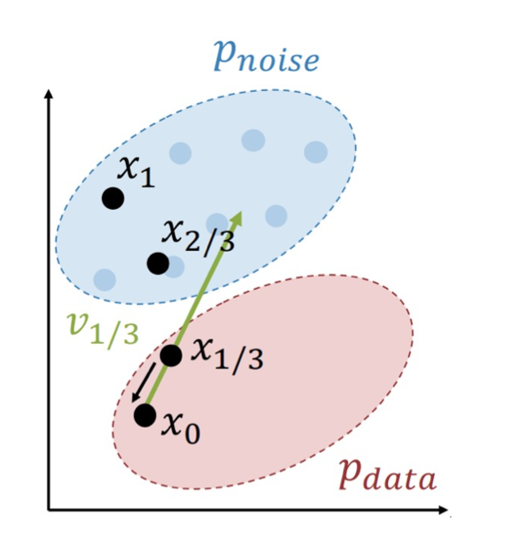

生成模型
Generative Models · Part I & II
从概率建模、自回归与 VAE，进入 GAN、Rectified Flow 和条件生成，再观察图像、视频与世界模型的架构和实验。
先明确学习任务的输入与输出
学习方式取决于训练中能观察到什么，以及模型要输出什么。先从熟悉的图像任务建立这两个坐标。
本讲路线：Part I 与 Part II
本讲分为两部分，按模型获得训练信号和生成样本的路径来划分。Part I 从概率建模出发，依次覆盖生成建模基础、最大似然与自回归、VAE；Part II 转向 GAN、Rectified Flow 与扩散、条件生成与 CFG，并以图像、视频和世界模型为应用实例。
Part I 对应网页的第 1–47 个演示步骤；第 48 步起进入 Part II，首先讨论 GAN 怎样在不直接计算样本似然时获得训练信号。
两部分始终围绕同一组问题：怎样学习数据或条件数据的分布，怎样从模型生成新的样本？

同样是图像，输出可以完全不同
监督学习（supervised learning）的训练数据为成对的输入 x 与目标 y。猫图分类输出 Cat；图像描述输出“地板上行李箱上的一只猫”；目标检测输出两只犬和一只猫的框与类别；语义分割给天空、草地、猫、树等像素区域赋类别。
分类给整幅图的标签，描述生成文字，检测定位对象，分割逐像素分类。目标形式不同，所需标注也不同。回归同样使用输入与数值目标的配对。

没有标签，仍可学习数据结构
当训练样本只有 x，任务可以围绕样本之间的组织、低维表示或整体分布来定义。
聚类、降维与密度估计
无监督学习（unsupervised learning）不依赖外部任务标签。K-means 聚类按特征相近程度分组；主成分分析（Principal Component Analysis，PCA）把三维样本投影到二维；密度估计（density estimation）学习哪些区域更集中。
聚类散点的颜色表示分组，PCA 的箭头表示降维前后对应关系。密度图进一步为不同位置分配非负数值；这条路线把问题引向数据分布 p(x)。

判别与生成：概率分配给谁
先固定条件，再看哪些变量共享归一化约束，才能理解不同模型实际学习的对象。
三种分布，三种问题
判别模型（discriminative model）学习给定数据的标签分布 p(y|x)；无条件生成模型学习数据分布 p(x)；条件生成模型学习给定标签或其他条件的 p(x|y)。
对连续变量，密度值本身不是单点概率，区间概率由积分给出，密度可以大于 1。对离散图像或类别，使用概率质量与求和。两种情形都要求非负且总量为 1。

p(x)\geq0,\qquad\int p(x)\,dx=1
连续 x 的密度在整个取值空间上积分为 1；某个区域 A 的概率为对 A 积分。离散 x 则改为求和。
固定图像，在类别之间分配概率
对猫图，Cat 和 Dog 两个候选标签竞争概率；换成犬图，就建立另一组类别分布。不同图像之间没有共同的标签概率总额。
普通分类器即使面对猴或彩色噪声，也会在预设类别中输出归一化分布。要拒绝不适用的输入，还需要另外设计并验证拒识机制。图中的柱高用于解释归一化对象，不是模型评测数值。

\sum_{y\in\mathcal{Y}}p(y\mid x)=1固定任一输入 x，在类别集合 𝒴 上求和。它不要求把不同输入的 p(y|x) 加起来等于 1。
固定模型，比较所有可能图像
生成模型把概率质量分配到所有可能的离散图像；连续建模时则分配密度。猫、犬、猴与噪声都位于同一个输入空间中。
模型需要反映外观、结构、姿态及其组合的规律，例如犬坐着与站着的可能性。密度可以作为异常分析的信号，但高似然并不保证输入在语义上属于训练分布，异常检测需要独立检验。

给定条件后生成什么
条件固定后仍可能有许多合理输出。贝叶斯公式进一步说明条件生成、判别和无条件生成之间的联系。
同一图像集合，不同条件分布
条件生成（conditional generation）固定 y 后，在所有可能的 x 之间分配概率。条件为 cat 时猫图更合理，条件改为 dog 后图像的相对概率会改变。
两个条件对应两次独立归一化。条件也可以是一段提示词、一张参考图或上下文，输出则是与之相符的新数据。

\sum_x p(x\mid y)=1
离散情形下，对固定条件 y 的全部 x 求和；连续情形改为积分。
贝叶斯公式连接三类分布
同一个联合分布可以写为 p(x,y)=p(y|x)p(x)，也可以写为 p(x|y)p(y)。因此，当标签先验为正时，可以把条件生成分布写成其他三项的组合。
这个恒等式解释概念关系。实际建立条件生成模型通常直接参数化 p(x|y)，不必分别训练三个组件再相除。

p(x\mid y)=\frac{p(y\mid x)p(x)}{p(y)}要求 p(y)>0。分子依次为判别条件分布与无条件数据分布，分母为标签先验；这些项必须来自一致的联合分布。
分布决定可做的事情
判别模型用于标签预测与有标签特征学习；生成模型可以从无标签数据学结构、支持密度分析并采样新数据；条件生成模型则按指定标签或条件产生样本。
异常输入的拒识需要合适的分数和评价协议。这里的“生成模型”同时包含无条件和条件两种形式，是否有条件与模型是否依赖人工标签是不同维度。

为什么需要输出分布
一个条件经常对应多个合理结果，生成建模要表达这种不确定性。
一个诗歌提示，许多可能文本
语言生成把提示作为条件 y，把后续文本作为输出 x。“写一首关于生成模型的押韵短诗”可以对应许多不同答案，模型学习 p(x|y)。
例如：“它从学到的分布采样；每个词依上下文登场。”这保留了诗歌示例的意思：序列中的词依赖此前内容。单个示例只是一次输出，不能代表全部可能文本。

给定一幅画面，接下来会发生什么
图像到视频（image-to-video）以当前图像为条件，产生未来帧序列。手持白色物体、打开纸盒的场景还可能继续发生多种动作。
输入画面固定，右侧两帧展示未来输出的例子。仅靠当前画面通常无法唯一决定后续运动，条件分布需要容纳不同的合理未来。

用训练目标和采样路径辨认方法
能否直接计算似然，以及怎样产生样本，是接下来比较生成模型的两个问题。
四类方法的路线图
自回归模型通过条件分布乘积计算似然，并按顺序采样；变分自编码器（Variational Autoencoder，VAE）引入潜变量，优化对数似然下界。
生成对抗网络（Generative Adversarial Network，GAN）通常通过对抗目标学习采样器；扩散模型（diffusion model）通过学习去噪等目标迭代生成。扩散有不同的似然估计形式，不能仅用“绝对无法计算密度”概括。后两类留到 Part II。

最大似然：把分布拟合到数据
先写出可计算且归一化的 pθ(x)，再选择参数，让训练样本在模型下更可能出现。
独立样本的联合似然是乘积
最大似然估计（maximum likelihood estimation，MLE）假设训练集由 N 个独立同分布样本组成。模型参数 θ 决定每个样本的概率质量或密度，训练寻找使联合似然最大的参数。

\theta^*=\arg\max_\theta\prod_{n=1}^{N}p_\theta(x^{(n)})x⁽ⁿ⁾ 为第 n 个完整训练样本；θ 包含神经网络参数。模型必须先满足分布的归一化要求。
取对数，把乘积变为求和
多个小概率相乘容易造成数值下溢。对数是严格单调递增函数，最大化似然等价于最大化对数似然，乘积由此变为和。

\log\prod_{n=1}^{N}p_\theta(x^{(n)})=\sum_{n=1}^{N}\log p_\theta(x^{(n)})在样本似然为正的参数范围内使用对数；模型输出为零时，对应对数似然为负无穷。
用负号接上梯度下降
负对数似然（negative log-likelihood，NLL）把最大化目标改成最小化目标。用小批量估计平均损失，沿负梯度方向更新参数。

\mathcal{J}( \theta)=-\frac1N\sum_{n=1}^{N}\log p_\theta(x^{(n)}),\qquad\theta\leftarrow\theta-\eta\nabla_\theta\mathcal{J}η>0 是学习率。若直接优化正的对数似然，则应使用梯度上升；两种写法的符号必须一致。
链式分解：每次预测下一个元素
把高维样本写成有序序列后，可以用一组条件分布精确表示联合分布。
由条件概率逐步累积联合概率
自回归模型（autoregressive model）把 x=(x₁,…,xT) 的联合分布按概率链式法则分解。每一项只以之前的元素为条件，乘起来得到整个序列的似然。
结构算例固定三个事件的条件概率为 0.6、0.5、0.2，完整序列概率为 0.06。这里展示的是同一路径的累计概率；实际模型在每个前缀都输出覆盖所有候选的归一化分布。
p_\theta(x_1,\ldots,x_T)=\prod_{t=1}^{T}p_\theta(x_t\mid x_{<t})x<t=(x₁,…,xt−1)，首项条件为空，可由起始标记实现。链式法则不要求前面变量之间独立。
\log p_\theta(x)=\sum_{t=1}^{T}\log p_\theta(x_t\mid x_{<t})训练时把每个位置的条件对数概率求和，再对数据集求平均；离散输出对应下一元素分类的交叉熵。
RNN 和因果 Transformer 参数化同一分解
循环神经网络（RNN）用隐藏状态积累前缀；因果 Transformer 用遮罩注意力读取此前位置。二者都能输出下一词的条件分布。
训练时真实前缀已知，因果遮罩保证当前位置无法读取未来目标。生成时逐次采样，将新词追加到前缀，再预测下一词，直到结束标记或长度上限。

把图像排成序列
自回归不只用于语言。先为图像规定顺序，就能将图像生成转成连续的分类决策。
从扫描顺序到 256 类预测
对 8 位 RGB 图像，先按行扫描像素，再按固定通道顺序依次预测 R、G、B 子像素值。每个值从 0 到 255，因此每一步是 256 路分类。
输入是已经生成的子像素前缀，输出是下一个子像素的分布。图中的课堂照片、局部放大与箭头，把二维空间和通道顺序连接起来；模型可由 RNN、因果卷积或 Transformer 参数化。

高分辨率使生成路径很长
逐子像素生成一幅 1024×1024 的 RGB 图像，需要 1024×1024×3=3,145,728 次顺序决策。问题来自很长的生成路径；训练与生成的并行能力也不同。
一个改进方向是把图像表示为块或离散视觉 token 序列，缩短序列长度。这需要定义块表示、编码及解码方式，本部分只建立该方向，不提前展开具体视觉 tokenizer。

先学会重建，再追问怎样生成
自回归直接分解高维密度。另一条路线先学习潜在表示；从普通自编码器开始，才能看清 VAE 额外解决的采样问题。
从显式条件乘积转向潜变量
PixelRNN、PixelCNN 一类自回归模型直接给出条件概率乘积。VAE 用未观测潜变量构造生成模型，边缘似然通常难以精确求值，因此转而优化可计算的对数似然下界。
理解下界之前，先建立两个问题：无标签时怎样学习表示？学到表示之后，怎样产生新的样本？

编码器从输入中提取表示
自编码器（autoencoder）的编码器将数据 x 映射为潜在表示 z，希望保留对象、外观或场景等有用信息。编码器可以采用 MLP、CNN 或 Transformer。
只有编码器还没有训练信号；如果没有类别标签，需要从数据自身建立可比较的目标。

解码器重建输入，形成训练信号
解码器从 z 预测重建 x̂，把原输入 x 作为目标。训练通过减小输入与重建之间的平方误差，同时更新编码器与解码器。
输入图像和重建图像网格按位置一一配对；重建保留了整体颜色与结构，一些细节更模糊。重建质量本身不能保证特征对所有下游任务都有用。

z=f_\phi(x),\quad\hat{x}=g_\theta(z),\quad\mathcal{J}_{\mathrm{AE}}=\|x-\hat{x}\|_2^2x 与 x̂ 维度相同；z 可为较紧凑的表示。目标来自输入自身，预训练不需要人工类别标签。
保留编码器，换成分类头
训练后保留编码器，移除重建解码器，再接分类头，把 z 用于标签预测。分类阶段的目标 y 来自下游标注数据。
可冻结编码器或继续微调，分别检验固定表示质量和适配能力。无标签重建预训练与有标签分类属于两个不同阶段。

解码器需要一个可采样的潜空间
会把 z 解码为数据还不够，还必须知道怎样获得合理的新 z。
新潜变量从哪里来
普通自编码器学会了训练数据到潜表示的映射，却没有规定这些表示服从哪一个已知分布。随意取 z，可能落到解码器没有学好的区域。
一种思路是为潜变量建立简单、可采样的先验，再学习从潜变量到数据的条件分布。这样生成时就有明确的取样起点。

先采 z，再生成 x
VAE 假设观测样本由潜在因素 z 生成。生成过程先从简单先验 p(z) 取样，再从解码器给出的 pθ(x|z) 取样。
常用先验是 d 维标准高斯 N(0,I)。潜变量可以承载外观、方向等变化，但这些语义不会仅凭设定先验就自动获得。生成模型参数 θ 决定如何把潜变量转为观察分布。

z\sim p(z)=\mathcal{N}(0,I_d),\qquad x\sim p_\theta(x\mid z)z∈ℝᵈ，Iᵈ 为 d×d 单位矩阵。先验固定时不包含待学习参数；观察量 x 可以是 D 维连续数据或离散数据。
似然为什么难算
训练集只给出观测数据，没有生成它的潜变量。最大似然因此需要把未观测因素消去。
对未观测的潜变量积分
若每个训练样本都附有真实 z，就能直接训练条件生成器。实际只观察到 x，需要对所有可能的 z 边缘化。
先验密度可以求值，解码器也能计算固定 z 下的条件密度；然而非线性解码器使高维积分通常没有解析解，直接优化边缘似然仍然困难。

p_\theta(x)=\int p_\theta(x,z)\,dz=\int p_\theta(x\mid z)p(z)\,dz
pθ(x,z)=pθ(x|z)p(z) 是联合分布。积分遍历整个潜空间，而非只挑一个最符合输入的 z。
贝叶斯改写仍需真实后验
真实后验（posterior）pθ(z|x) 描述观察到 x 后，对潜变量的更新认识。把边缘似然用贝叶斯公式改写，分母恰好是这个通常难算的后验。
计算后验又需要边缘似然作归一化常数，因此改写公式没有消除困难。下一步引入一个能够快速计算和采样的近似后验。

p_\theta(z\mid x)=\frac{p_\theta(x\mid z)p(z)}{p_\theta(x)}要求 pθ(x)>0；先验与条件生成器共同决定真实后验，后验一般不再是简单高斯。
p_\theta(x)=\frac{p_\theta(x\mid z)p(z)}{p_\theta(z\mid x)}在分母为正的 z 上成立。不能把难算的后验当成现成可用的数值。
用编码器近似后验分布
编码器的输出从确定向量变成潜变量分布的参数，解码器则继续描述数据生成过程。
学习 qφ(z|x)，近似 pθ(z|x)
变分推断（variational inference）引入可计算的 qφ(z|x)，近似真实后验 pθ(z|x)。编码器接收观测 x，输出潜变量的分布；解码器接收 z，输出数据的条件分布。
φ 与 θ 分别属于编码器和生成模型，随后通过同一个训练目标联合优化。近似后验与解码条件分布的变量方向不同，不能混用。

网络输出分布参数，再从分布采样
常用编码器输出 d 维均值 μφ(x) 与对数方差 sφ(x)，令标准差 σφ(x)=exp(sφ(x)/2)，从而保持方差为正。各维条件独立构成对角高斯近似。
解码器也输出分布参数。本部分以 D 维连续观察为例，让它输出均值 μθ(z)，并固定各向同性观察方差 τ²；离散或二值数据需要相应的观察分布。

q_\phi(z\mid x)=\mathcal{N}(\mu_\phi(x),\operatorname{diag}(\sigma_\phi^2(x)))μ、σ、s 都是 d 维向量；协方差矩阵为 d×d，对角元素是方差 σⱼ²。标准差 σⱼ 与方差 σⱼ² 必须区分。
p_\theta(x\mid z)=\mathcal{N}(\mu_\theta(z),\tau^2 I_D),\qquad\tau>0μθ(z)∈ℝᴰ；τ 是观察噪声标准差，与潜变量标准差 σφ(x) 不同。此处固定 τ，后续平方误差解释才成立。
固定高斯观察方差对应平方误差
对固定观察方差的高斯解码器，最大化固定 z 下的条件对数似然等价于最小化输入与预测均值的平方误差。它给出了重建项的概率解释。
若观察方差也要学习，归一化项随参数变化，不能只保留平方误差。现在还缺少一个同时训练编码器与解码器的完整目标。

\log p_\theta(x\mid z)=-\frac{D}{2}\log(2\pi\tau^2)-\frac{\|x-\mu_\theta(z)\|_2^2}{2\tau^2}D 为观察维度。第一项在 τ 固定时是常数；第二项保留误差尺度。接下来还需对 qφ(z|x) 中的 z 取期望。
ELBO 推导：从恒等式到期望
固定一个观测样本 x，保留完整的先验、真实后验和近似后验，逐步整理对数似然。
第一步：写出贝叶斯恒等式
从生成模型的联合分布出发，将边缘似然写成条件似然、先验与真实后验的比。取自然对数后，仍是精确等式。

\log p_\theta(x)=\log\frac{p_\theta(x\mid z)p(z)}{p_\theta(z\mid x)}固定 pθ(x)>0 的 x；等式在相关密度和分母有效的潜变量位置成立。
第二步：分子分母同乘近似后验
引入 qφ 不需要先假设它已经等于真实后验。只要相关支持和可积条件满足，就能乘同一个非零因子，为下一步分组创造条件。

\log p_\theta(x)=\log\frac{p_\theta(x\mid z)p(z)q_\phi(z\mid x)}{p_\theta(z\mid x)q_\phi(z\mid x)}分母是 pθ(z|x)qφ(z|x)，分子保留先验 p(z)。常用非退化高斯近似在整个 ℝᵈ 为正。
第三步：拆成三个对数项
利用乘积与商的对数规则，把先验 p(z) 与一个 qφ 配对，再把另一个 qφ 与真实后验配对。三个项的符号决定后续的上下界方向。

\log p_\theta(x)=\log p_\theta(x\mid z)-\log\frac{q_\phi(z\mid x)}{p(z)}+\log\frac{q_\phi(z\mid x)}{p_\theta(z\mid x)}第一项奖励重建；第二项带负号；第三项带正号。此时每项仍依赖 z，而它们的总和与 z 无关。
第四步：对 qφ(z|x) 取期望
固定 x 时，log pθ(x) 是关于 z 的常数。因 qφ(z|x) 归一化，可以在等式两侧对它取期望，并用期望的线性性拆开右侧三项。

\log p_\theta(x)=\mathbb{E}_q[\log p_\theta(x\mid z)]-\mathbb{E}_q\!\left[\log\frac{q_\phi(z\mid x)}{p(z)}\right]+\mathbb{E}_q\!\left[\log\frac{q_\phi(z\mid x)}{p_\theta(z\mid x)}\right]这里所有期望都对同一个 q=qφ(z|x) 计算。需要各项可积；并未把真实后验替换为近似后验。
识别 KL，得到可优化的下界
三个期望中，两个是分布之间的 KL 散度。区分它们的作用，就能看出哪些可算、哪一项构成差距。
第五步：把两个比值期望识别为 KL
KL 散度（Kullback–Leibler divergence）定义为对第一分布取对数密度比的期望。在满足支持条件时，它非负，但通常不对称。

D_{\mathrm{KL}}(q\|r)=\mathbb{E}_{z\sim q}\!\left[\log\frac{q(z)}{r(z)}\right]\geq0q、r 是同一变量空间上的归一化分布。q 有正密度而 r 为零的区域可能使 KL 为无穷。
\log p_\theta(x)=\underbrace{\mathbb{E}_q[\log p_\theta(x\mid z)]-D_{\mathrm{KL}}(q_\phi(z\mid x)\|p(z))}_{\mathcal{L}_{\mathrm{ELBO}}(x)}+D_{\mathrm{KL}}(q_\phi(z\mid x)\|p_\theta(z\mid x))先验 KL 的第二个分布是 p(z)，后验 KL 的第二个分布是 pθ(z|x)。只有最后一个 KL 是对数似然与 ELBO 的差距。
重建项：让样本在解码分布下更可能
重建项让编码器为 x 选出的潜变量在解码器下能够解释同一个 x。固定 z 时，条件高斯对数似然可直接计算。
非线性解码器下，对整个 q 的期望一般没有闭式。可从 q 取 L 个潜变量，计算各自的条件对数似然，再取平均。

\mathbb{E}_q[\log p_\theta(x\mid z)]\approx\frac1L\sum_{\ell=1}^{L}\log p_\theta(x\mid z^{(\ell)}),\quad z^{(\ell)}\sim q_\phi(z\mid x)L≥1 是每个输入的 Monte Carlo 样本数。有限样本均值是期望的估计，不等于精确期望；单次估计不一定维持精确的下界关系。
先验 KL：限制编码分布的偏离
先验 KL 鼓励每个输入的近似后验接近可采样的先验，避免潜表示任意散布。对角高斯编码器与标准高斯先验的 KL 可以解析计算。

D_{\mathrm{KL}}(q_\phi(z\mid x)\|\mathcal{N}(0,I))=\frac12\sum_{j=1}^{d}(\mu_j^2+\sigma_j^2-1-\log\sigma_j^2)μⱼ、σⱼ 为当前 x 的编码均值和正标准差。μ=0 且所有 σⱼ=1 时 KL 为零；训练是在该正则与重建之间取得平衡。
后验 KL：难算，但一定非负
真实后验通常难算，因此不能直接求最后一项；但知道它非负，就足以确定界的方向。近似后验等于真实后验时，差距为零。
优化 ELBO 会同时改变生成模型与近似推断，不能保证每次参数更新都使后验差距单调减小。

\log p_\theta(x)-\mathcal{L}_{\mathrm{ELBO}}(x)=D_{\mathrm{KL}}(q_\phi(z\mid x)\|p_\theta(z\mid x))\geq0这是精确期望下的恒等式。若 q 无法表示真实后验，即使达到所选近似族的最优点，仍可能存在差距。
联合最大化证据下界
证据下界（Evidence Lower Bound，ELBO）是观测数据对数似然的可训练下界。编码器与解码器通过同一个目标共同学习。

\log p_\theta(x)\geq\mathcal{L}_{\mathrm{ELBO}}(x)=\mathbb{E}_{q_\phi(z\mid x)}[\log p_\theta(x\mid z)]-D_{\mathrm{KL}}(q_\phi(z\mid x)\|p(z))最大化 ELBO 等价于最小化它的负值。对数据集取平均后，第一项训练生成与推断，第二项正则化编码分布；真实后验 KL 不需要直接求值。
把 VAE 目标落到一条计算图
固定一个输入，依次编码、正则、采样、解码和比较。训练时的随机节点需要能够传回编码器梯度。
输入经过编码器，得到潜分布参数
训练开始于真实数据 x。编码器输出均值与对数方差，由此得到正标准差；这些量一起确定 qφ(z|x)。
接下来的二维结构算例固定 x=(0.6,−0.2)、μ=(0.5,−1)、σ=(0.5,2)，仅用来跟踪采样和损失，不代表图像实验或已训练模型。

重参数化：随机性来自独立噪声
重参数化技巧（reparameterization trick）先抽与模型参数无关的标准高斯噪声 ε，再用可微变换构造 z。重建梯度可以沿 z 对 μ、σ 的依赖传回编码器。
固定噪声 ε=(1,−0.5)，结构算例得到 z=(1,−2)。乘噪声的是标准差 σ；若使用方差会得到错误的采样尺度。先验 KL 在同一批编码参数上解析计算，为 1.75。

\epsilon\sim\mathcal{N}(0,I_d),\qquad z=\mu_\phi(x)+\sigma_\phi(x)\odot\epsilon⊙ 是逐元素乘法，三个向量维度均为 d。对固定噪声，∂zⱼ/∂μⱼ=1，∂zⱼ/∂σⱼ=εⱼ；无需对抽噪声的操作求导。
把同一个 z 送入解码器
解码器接收重参数化得到的 z，输出 μθ(z)。训练需要评估真实 x 在这个观察分布下的对数似然。
结构算例使用固定线性解码 D(z)=(z₁/2,z₂/4)，故 z=(1,−2) 得预测均值 (0.5,−0.5)。实际神经解码器可以复杂得多，采样与条件概率的关系相同。

重建与 KL 相加，再反向传播
对一个重参数化样本计算负重建对数似然，加上解析先验 KL，得到负 ELBO 的随机估计。梯度经过解码器、z 和编码器，联合更新 θ、φ。
算例取观察方差 τ²=1。输入与均值的平方误差是 0.1，去掉固定高斯常数后的重建 NLL 为 0.05；加 KL 1.75，得到 1.80。训练优化的是批平均，采样噪声与样本通常随迭代变化。
\widehat{\mathcal{J}}(x)=-\log p_\theta(x\mid\mu_\phi(x)+\sigma_\phi(x)\odot\epsilon)+D_{\mathrm{KL}}(q_\phi(z\mid x)\|p(z))ε 从标准高斯独立抽样；这里 L=1。固定观察方差时，第一项为缩放平方误差加常数；KL 不经过采样估计。
重建与先验之间存在张力
一个目标希望保留输入细节，另一个目标希望潜分布便于统一采样。两者共同决定表示。
辨别样本的能力与潜空间约束
重建倾向保留不同输入的差异，并可能偏好较小的潜变量噪声；先验 KL 倾向让均值靠近零、标准差靠近一。完整目标需要兼顾两者。
若每个输入都编码成完全相同的标准高斯，就无法由 z 区分输入；若标准差趋近零，KL 中的 −log σ² 会发散。两种极端揭示目标张力，不能把其中任一极端当成训练的必然结果。

训练后怎样生成新数据
生成时从先验开始，编码器无需参与；潜空间网格帮助观察解码器学到的变化。
从先验取 z，仅运行解码器
生成新样本时先从 p(z)=N(0,I) 抽样，再计算 pθ(x|z)，最后从该条件分布抽出 x。无需给定真实输入，也不经过编码器。
若高斯解码器只展示均值 μθ(z)，得到的是条件均值图像；严格从模型采样时还应加入观察噪声。两种输出要区分。

z\sim\mathcal{N}(0,I_d),\quad\xi\sim\mathcal{N}(0,I_D),\quad x=\mu_\theta(z)+\tau\xi采用前面固定观察方差的高斯解码器；z 与 ξ 独立。τ 控制观察噪声，维度 D 与潜维度 d 可不同。
沿两个潜方向观察数字如何变化
数字网格的纵向改变 z₁，横向改变 z₂。邻近位置的数字形态逐渐变化，展示解码器如何把潜空间位置映射成观察外观。
保持相同坐标比较轮廓、笔画和类别过渡。标准高斯先验的维度独立不保证某一维对应唯一的人类语义因素；语义解耦还依赖数据、归纳偏置与学习约束。

用同一组问题复习 Part I
回到输入、输出、目标和采样路径，把不同方法放到一张可比较的地图中。
从数据分布到两条生成路线
监督学习使用输入与目标配对，无监督学习从数据结构建立目标。判别模型预测标签，生成模型描述数据，条件生成模型在指定条件下描述可能输出。
自回归将似然写为条件乘积并逐项生成；VAE 引入先验与潜变量，用近似后验和 ELBO 联合训练，再从先验经解码器生成。Part II 将沿着训练信号和采样路径继续比较 GAN 与扩散模型。

从似然走向对抗生成
已有路线分别优化显式条件似然和变分下界。接下来考察只需提供样本的隐式生成分布，训练信号从何而来。
生成样本需要显式密度吗
自回归模型把联合分布写成可计算的条件概率乘积；VAE 用潜变量构造生成过程，并最大化对数似然下界。GAN 选择另一条路线：先定义可采样的生成器，再通过对抗学习匹配数据分布。
生成器仍然定义分布 pG，但通常无法直接计算某个样本的密度。训练不再要求为每个训练样本计算似然。

\log p_\theta(x)\ge \mathbb{E}_{q_\phi(z\mid x)}[\log p_\theta(x\mid z)]-D_{\mathrm{KL}}(q_\phi(z\mid x)\Vert p(z))复习 VAE：下界作用于对数似然。GAN 将改用真假分类提供训练信号。
从简单噪声产生新样本
已知真实样本 x 来自数据分布 pdata，希望生成器产生相同分布的新样本。先从简单先验 p(z) 抽取潜变量，例如标准高斯，再经过神经网络 Gθ 得到假样本。
训练目标是生成分布接近真实分布，并不要求每个随机 z 对应某个指定真实样本。生成器输出可以与高维图像同形状。

z\sim p(z),\qquad \widetilde{x}=G_\theta(z),\qquad \widetilde{x}\sim p_Gz∈ℝᵈ、图像 x∈ℝᴰ；pG 是随机变量 Gθ(z) 的分布。训练后采样只需先验与 G。
让真假判别提供训练信号
单有 G 的前向生成还没有学习标准。判别器 Dψ 接收真实样本或 G 产生的样本，输出来自真实数据一方的分类分数。D 学会区分，G 则学习让假样本被判为真。
这构成两个相互影响的学习任务。训练时需要 G 和 D；生成新样本时只保留 G。联合训练能否稳定匹配分布，还取决于目标和优化过程。

拆解 GAN 的极小极大目标
先解释两条数据路径，再分别固定生成器和判别器，观察各自要优化的量。
两类样本组成一个价值函数
真实项希望 D(x) 接近 1，生成项希望 D(G(z)) 接近 0，这两项共同训练判别器。生成器则试图提高假样本的真实分数，因此对同一个生成项采取相反优化方向。
D 的分数是本训练任务中的真假分类概率估计，不能直接等同于图像的无条件密度。两种来源的采样比例也会影响其概率解释。

\min_\theta\max_\psi V(\theta,\psi),\quad V=\mathbb{E}_{x\sim p_{\mathrm{data}}}[\log D_\psi(x)]+\mathbb{E}_{z\sim p(z)}[\log(1-D_\psi(G_\theta(z)))]此处真假来源等权。ψ 属于 D，θ 属于 G；两个期望分别用真实样本批次和噪声批次估计。
固定 G：提高真假分类能力
更新判别器时，假样本由当前生成器给出并视作固定训练输入。D 增大真实项和生成项，使真实分数上升、生成分数下降。
若实现为二元交叉熵最小化，就对价值函数取负。生成样本应切断通向 G 参数的梯度，避免这一步顺带改变生成器。

L_D=-\mathbb{E}_x\log D_\psi(x)-\mathbb{E}_z\log(1-D_\psi(G_\theta(z)))最小化 LD 与固定 θ 后最大化 V 等价；这里假样本对 θ 停止梯度。
固定 D：让假样本获得更高真实分数
更新生成器时，判别器的参数保持固定。G 改变输出图像，使 D(G(z)) 增大；真实数据项不含 θ，不会给生成器提供梯度。
固定 D 的参数仍需允许梯度穿过 D 对输入求导，再传回 G。把整个判别前向过程关闭梯度会切断生成器需要的信号。

L_G^{\mathrm{minimax}}=\mathbb{E}_z\log(1-D_\psi(G_\theta(z)))这是原始极小极大生成器目标；它与后面常用的非饱和目标有相同理想匹配点，但梯度不同。
交替更新与梯度饱和
两方轮流改变参数，训练目标持续移动；需要同时检查优化方向和传回生成器的有效梯度。
冻结一方，更新另一方
每轮先更新 D，再更新 G，重复进行。对原始价值函数，D 沿梯度上升，G 沿梯度下降；两方没有一个共同单调下降、能直接代表图像质量的总损失。
结构算例固定真实值 x=1、噪声 z=1，令 G(z)=gz、D(u)=sigmoid(au+b)，学习率 0.2，初始 g=0.2、a=1、b=0。先更新 D 的 a,b，再用非饱和目标更新 g；每个阶段的分数由当前参数重新计算。
双方损失曲线仍然有诊断价值，但应结合样本、多样性与合适的分布指标判断。
\psi\leftarrow\psi+\eta_D\nabla_\psi V,\qquad \theta\leftarrow\theta-\eta_G\nabla_\theta V
两式表示原始博弈的方向；使用非饱和 LG 时，第二式改为对该 LG 梯度下降。ηD、ηG 为正学习率。
判别过强时，生成器为何学得慢
训练初期假样本容易识别，D(G(z)) 可能接近 0。原始生成器目标在这一区域给判别 logit 的梯度很小，信号再通过判别器传到生成器，学习可能变慢。
记假样本 logit 为 a、D=sigmoid(a)。log(1-D) 对 D 的导数并不趋零；必须把 sigmoid 的链式求导一起考虑，才能解释饱和。

\frac{\partial \log(1-\sigma(a))}{\partial a}=-\sigma(a)=-D例如 D=0.01，logit 梯度为 −0.01。它只是传回 G 的链路中的一项，并非完整参数梯度。
用非饱和目标增强初期信号
生成器仍然希望假样本被判为真，可以直接最小化负的真实对数分数。D 接近 0 时，这一目标对 logit 的梯度绝对值接近 1，为早期学习提供更强信号。
判别器继续使用真假分类目标。非饱和替代改变了生成器的训练梯度，不能把它写成原始极小极大价值函数的完全相同表达式。

L_G^{\mathrm{NS}}=-\mathbb{E}_{z}\log D_\psi(G_\theta(z)),\qquad \frac{\partial[-\log\sigma(a)]}{\partial a}=D-1此式中的 sigmoid 记为 σ。若 D=0.01，梯度为 −0.99，与原始 −0.01 对比。
理想判别器与分布匹配
先固定生成分布求判别器最优解，再讨论生成器的理想目标，最后回到有限网络的限制。
固定 pG，逐点求最优 D
把两个期望写为积分后，对于每个位置 x，只需最大化 pdata(x)log D(x)+pG(x)log(1-D(x))。令对 D 的导数为零，得到真实来源的最优判别比例。
分母大于 0 时公式有定义；只有真实分布有质量的位置最优分数为 1，只有生成分布有质量的位置为 0。

\frac{p_{\mathrm{data}}(x)}{D(x)}-\frac{p_G(x)}{1-D(x)}=0内点条件；二阶导数非正，说明该点为最大值。边界情况按极限处理。
D_G^*(x)=\frac{p_{\mathrm{data}}(x)}{p_{\mathrm{data}}(x)+p_G(x)}分子和分母是同一位置的概率质量或密度。公式依赖等权真假采样假设。
理想匹配时 D*=1/2
把最优 D 代回价值函数，可将生成器的目标解释为缩小真实与生成分布的差异。理想全局解是 pG=pdata，此时在共同支撑上 D*=1/2。
这是针对分布和任意容量函数的理想目标。某个训练批次上 D 输出 1/2，也可能只是判别器能力不足，不能独立证明生成器已经学好。

V(G,D_G^*)=-\log 4+2\,D_{\mathrm{JS}}(p_{\mathrm{data}}\Vert p_G)\ge-\log4补充理论联系：JS 为 Jensen–Shannon 散度；等号在两分布相同时成立。它解释理想解，不构成实际收敛保证。
理想最优解不保证训练收敛
固定容量网络未必能表达最优 G 和 D；有限数据、优化误差和双方持续变化的目标进一步影响训练。交替梯度更新也可能振荡，或只覆盖少量数据模式。
因此需要分别评价单个样本的逼真度和总体覆盖的多样性，防止把看起来很好的少数输出当作完整分布匹配。

DCGAN 与 StyleGAN
对抗目标没有规定唯一网络结构。下面通过两类具体架构观察噪声如何变成图像，以及生成层如何接受控制。
DCGAN：卷积生成自然图像
DCGAN 用卷积网络构建生成器和判别器。生成路径把低维潜向量逐层变成有空间结构的特征图，判别路径则逐层聚合图像信息作真假判断。
完整架构与下方生成样本共同说明：目标负责提供学习信号，卷积结构负责表达图像中的局部与层级规律。样本展示自然场景的外观，不单独证明分布覆盖完整。

StyleGAN：样式调制与独立噪声
StyleGAN 先把 z 映射到中间样式空间，再通过仿射变换在不同生成层控制特征的通道尺度与偏移。各层还注入独立随机噪声，用于局部随机细节。
AdaIN 先在各通道的空间位置上归一化，再施加样式参数。样式和独立噪声来自两条不同支路；图中的 A 与 B 分别对应样式仿射和噪声缩放。

\operatorname{AdaIN}(h,s,b)_{c,u,v}=s_c\frac{h_{c,u,v}-\mu_c(h)}{\sqrt{\operatorname{Var}_c(h)+\epsilon}}+b_ch∈ℝᶜˣᴴˣᵂ；μc、Varc 在空间轴上计算，sc、bc 按通道广播；ε>0 用于数值稳定。
沿潜空间插值
训练得到的生成器可以连续改变输入潜变量。观察输出如何变化，有助于理解学习到的表示。
插值潜变量，再送入同一个 G
给定两个潜变量端点 z0、z1，在线段上取中间向量并送入同一个生成器，得到一系列图像。网络连续性使输出可以逐渐变化，但变化是否符合人类语义，需要实际观察。
猫图展示了生成对象的外观。单个静帧无法展示整个插值过程；连续形变与语义可控也不能从这一帧直接推出。

z(λ)=(1-λ)z_0+λ z_1,\quad x(λ)=G(z(λ)),\quad 0\leλ\le1
此处 λ=0 对应 z0，λ=1 对应 z1；与时间变量 t 分开记号。线性插值不保证每个点都处在先验的高密度区域。
从一次生成走向逐步生成
GAN 把难题放在对抗训练上；接下来用一个监督回归任务学习从噪声逐步走向数据。
GAN 的能力与代价
GAN 的构造直接，能够生成高质量图像，训练后通常一次生成器前向就能得到样本。代价是两方训练容易失衡，损失与质量之间缺少简单关系，扩大模型和数据也需要稳定训练设计。
进入扩散模型时，本节采用 Rectified Flow 这一确定性流的表述来讲基本训练与采样。扩散与流匹配有多种数学形式，下面的时间、速度和更新公式针对所声明的线性路径，不能直接套到所有变体。

从图像到噪声，再反向生成
同一图像在不同噪声级别下仍有共同身份。学习在每个级别如何移动，就能把简单噪声变成复杂数据。
用 t 表示数据与噪声的混合程度
先选简单噪声分布，通常是标准高斯。把同一张猫图逐步与噪声混合，低噪声时保留外观，高噪声时结构逐渐淹没。时间 t 用来告诉模型当前处在哪个级别。
这里的 t 是生成建模的噪声时间，后面视频还有帧时间，两者应分别理解。端点约定在整段推导中保持一致。

一次预测局部变化，多次更新得到样本
网络接收当前含噪状态和 t，预测如何改变它。采样从 t=1 的噪声开始，重复预测并向较小 t 移动，直到 t=0。
直觉上可以说逐步去噪；在 Rectified Flow 的具体形式中，网络预测的是速度向量，实际生成更新沿时间减少的方向进行。它不直接输出一个可随意重复调用的“干净图”。

Rectified Flow：构造监督回归
每个训练样本都能与独立噪声配对，并在任意时刻构造已知输入和已知速度目标，因此无需观察真实的逐步去噪轨迹。
独立抽取数据、噪声与时间
每轮从数据集中抽 x，从简单噪声分布抽 z，再抽时间 t。基础设置中三者独立，t 在 [0,1] 均匀采样。
这个配对是构造监督的工具，数据集中不需要预先存在与某张图一一对应的噪声。图像与噪声具有相同形状。

沿直线构造 xₜ，导数给出目标速度
把数据 x 与噪声 z 线性混合得到 xt。固定这对端点后，对 t 求导得到 z−x，它在这条训练直线上恒定。
结构算例取 x=(2,−1)、z=(−1,2)，所以 v=(−3,3)。t 从 0 到 1 时，中间点依次为 (2,−1)、(1.25,−0.25)、(0.5,0.5)、(−0.25,1.25)、(−1,2)。
这一变化方向是数据到噪声。生成时从另一端开始，时间向下，移动方向相反。
x_t=(1-t)x+tz,\qquad \frac{d x_t}{dt}=z-x=vx、z、xt、v 的张量形状相同；t 是标量，可按样本广播到空间、通道或视频维度。
回归速度，最小化平方误差
网络 fθ 接收 xt 与 t，输出同形状的速度预测。已知构造它的 x,z，所以可以直接用 z−x 作监督，以平方误差训练。
一次迭代只需要随机时刻的前向计算，无需为了构造训练样本执行完整生成循环。训练目标对不同数据、噪声和时刻取期望。

L(\theta)=\mathbb{E}_{x,z,t}\left[\|f_\theta(x_t,t)-(z-x)\|_2^2\right]平方范数对样本的元素求和，再对随机变量取期望；实现按元素平均时只改变固定的归一化尺度。
把监督构造落到训练循环
对一个批次抽取与数据同形状的高斯噪声，为每个样本抽 t，并将 t 广播到其余轴。网络输出与目标作均方误差，反向传播更新参数。
下面给出 PyTorch 形式的训练核心。实际系统还需数据缩放、优化器与网络结构；这些不改变插值与监督目标的关系。

for x in dataset:
z = torch.randn_like(x)
t = torch.rand(x.shape[0], device=x.device)
tb = t.reshape(-1, *([1] * (x.ndim - 1)))
xt = (1 - tb) * x + tb * z
velocity = model(xt, t)
loss = (velocity - (z - x)).square().mean()
optimizer.zero_grad()
loss.backward()
optimizer.step()从噪声积分到数据
训练完成后看不到真实端点 x。采样只能依靠当前状态、当前时间和学到的速度场逐步前进。
先定步数，再抽初始噪声
选择正整数步数 T，从噪声分布抽 x1。可用 50 步作为一个示例设置；步数取值与模型、求解器和质量预算有关。
训练端点 x 不参与采样。每一步的网络评估输入是当前生成状态，随着更新不断改变。

先预测速度，再向较小 t 移动
生成过程求解 dxt/dt=fθ(xt,t)，从 t=1 向 t=0 积分。均匀 Euler 步长为 −1/T，所以用当前状态减去预测速度的 1/T。
网络给出的是朝时间增加方向定义的速度；生成沿时间减少方向移动。减号来自时间步长，不能因示意箭头朝向数据就再翻转网络目标。

\Delta t=-1/T,\qquad x_{t-1/T}=x_t-\frac{1}{T}f_\theta(x_t,t)右侧使用更新前的 xt 和 t。更一般的非均匀网格要用实际 Δt，不能仍固定除以 T。
移动以后，重新计算速度
第一次移动后，必须在新的位置和时间重新计算速度，随后继续移动。学习到的是整个中间分布上的速度场，轨迹可以弯曲，不需要沿某个训练随机配对的直线返回。
结构算例固定 x1=(−1,2)，取 T=3，并用已知场 f(u,t)=(u1+t,2u2−t) 检查更新。依次得到 x2/3=(−1,1)、x1/3=(−8/9,5/9)、x0=(−19/27,8/27)。这个场仅用于算术演示，不声称是训练好的图像模型。
几何示意中，三次更新依次连接噪声区与数据区，体现“求速度、移动、重算”的过程。

恰好执行 T 次更新，返回 x₀
从 k=T 递减到 1，每次使用 t=k/T 求速度并更新一次，最后恰好到 t=0。整个采样循环在关闭梯度的环境下执行，训练网络参数保持固定。
训练时独立抽时刻以并行构造监督，采样时则串行依赖上一步结果。一次模型评估的成本与总步数共同决定生成代价。

sample = torch.randn(sample_shape, device=device)
with torch.no_grad():
for k in range(T, 0, -1):
t = torch.full((sample.shape[0],), k / T, device=device)
velocity = model(sample, t)
sample = sample - velocity / T
return sample加入生成条件
无条件生成学习整个数据分布。加入类别或文本 y 后，目标变为在指定条件下产生多种合理样本。
训练时让网络同时看到 y
从带条件的数据对中抽 x,y，噪声仍独立抽取。xt 的构造和 z−x 的监督保持相同，网络额外接收 y，从而学习不同条件对应的速度场。
几何图用圆点与方块区分两个条件下的数据区域；两者共享噪声起点分布。文本条件通常先编码为特征，再注入网络。

L=\mathbb{E}_{(x,y),z,t}\|f_\theta(x_t,t,y)-(z-x)\|_2^2条件是训练样本的 y，和混合后的 xt 配对；不改变真实端点 x 的身份。
每一步采样使用同一个条件
采样时先选条件 y，再抽初始噪声。在每个时间步将当前状态、时间和同一个 y 输入网络，沿对应条件速度场积分。
不同噪声可在同一个条件下得到不同输出。条件并不唯一确定图像，它约束的是一组可能样本的分布。

x_{t-1/T}=x_t-\frac{1}{T}f_\theta(x_t,t,y)网络接收固定的 y；不应只在第一步使用条件，而在后续更新中丢失它。
Classifier-Free Guidance
条件预测可以满足提示，也可能表现得不够强。CFG 在同一状态上比较有条件和无条件两种预测，以调节条件的影响。
随机丢弃条件，训练同一网络的两种能力
训练时以一定概率将 y 替换为空条件 ∅，其余时候保留真实条件。xt 与速度监督不变，同一个网络由此既能作条件预测，也能作无条件预测。
空条件可以是专门的空提示编码，不表示将数据、时间或目标速度设为零。丢弃概率是训练超参数。

在同一个 xₜ,t 上计算两支速度
采样时对同一个状态和时间，分别输入空条件和目标条件。两次预测的差反映条件引起的速度变化，比较时必须固定当前状态。
由于本节将速度定义为朝噪声时间增加方向，图中的实际生成位移画为 −v。这样才能同时保持训练目标 z−x 和生成更新减号的一致性。

v_u=f_\theta(x_t,t,\varnothing),\qquad v_c=f_\theta(x_t,t,y)
两支来自同一个模型；c 表示 conditional，u 表示 unconditional。
沿条件差异外推，再反向积分
组合速度为 vc+w(vc−vu)。当 w=0 时直接使用条件分支；w>0 时沿两支差异外推，使生成更偏向条件。实际更新仍用当前状态减去组合速度乘步长。
结构算例取 vu=(1,2)、vc=(−1,2)。w=0、1、2 时组合分别为 (−1,2)、(−3,2)、(−5,2)；图示箭头画 −v，因此横向条件差异被放大。
更强引导不保证所有维度质量都更好，过大权重可能降低多样性或引入伪影。
v_{\mathrm{CFG}}=(1+w)v_c-wv_u,\qquad x_{t-1/T}=x_t-v_{\mathrm{CFG}}/T此记号下 w=0 是条件预测；另一种常见记号用 s=1+w，其普通条件点为 s=1。不要混用两个权重零点。
无需额外分类器，通常需要两支网络评估
早期分类器引导使用额外的含噪分类器及其对输入的梯度。CFG 利用生成网络自己的有条件与无条件预测，省去独立分类器。
标准实现每个时间步需要两支预测，网络计算量通常约为单支的两倍；可以合并批次，实际时延还受硬件和实现影响。相同组合必须用于整个积分过程。

网络应该预测哪个速度
同一个含噪状态可能由不同的数据与噪声配对产生。网络只看到中间状态，无法知道训练时抽中了哪一对端点。
平方误差的最优解是条件平均速度
多条训练直线可以穿过同一个 xt，但对应的 z−x 不同。面对相同输入，确定性网络只能给一个预测；平方误差最小的选择是这些目标在条件分布下的平均。
这解释了为什么学习到的速度场通常不会复现某个随机配对的完整直线。网络学的是不同配对共同诱导的中间分布如何变化。

f^*(u,t)=\mathbb{E}[z-x\mid x_t=u,t]均值对与当前状态 u 一致的配对求条件期望，不能直接用全数据的无条件均值代替。
两端能推导出更简单的条件均值
在 t=1 时 xt=z 已知，但数据端点仍独立，最优速度为 z−E[x]。在 t=0 时 xt=x 已知，而 E[z]=0，所以最优速度为 −x。
这里的 t=0 是无噪声端点。公式仍包含当前状态，不能把最优速度简写成数据均值或噪声均值本身。

f^*(z,1)=z-\mathbb{E}[x],\qquad f^*(x,0)=\mathbb{E}[z]-x=-x要求训练端点独立，且噪声均值为零。条件生成时数据均值应改成 E[x|y]。
中间噪声区域需要更多学习资源
在中间噪声级别，数据结构与噪声混合，许多端点配对可能解释相同状态。对图像任务而言，网络常需在这里建立更复杂的语义判断。
这是设计训练采样分布的动机，具体难度还依赖数据、路径和参数化；不能把所有问题的最难时刻固定为 t=0.5。

改变训练时刻的采样分布
基础训练均匀抽 t，使相同长度的时间区间获得相同采样机会。可以调整这个分布，将训练资源分配到更有用的噪声尺度。
从均匀抽样到非均匀抽样
将 t 的采样分布改为 pt，可以增加某些噪声级别出现的频率。若不做重要性校正，这等价于重新加权训练目标。
时间采样分布与采样积分网格是两个选择：前者控制训练见到什么，后者控制生成时在哪里评估模型。密度 p(t) 描述训练时刻的采样偏好，接下来比较不同参数对应的分布形状。

logit-normal：把高斯变量映射到 (0,1)
先采实数 u，再经 sigmoid 映射成 t，得到 logit-normal 时间分布。合适参数可把更多概率放在中间噪声区域。
增大高斯均值会偏向较高 t；尺度改变分布集中程度。图例中的不同参数对应不同形状，不能把所有 logit-normal 都描述为只集中在中点。

u\sim\mathcal{N}(m,s^2),\qquad t=\sigma(u)=\frac{1}{1+e^{-u}}s>0 是标准差。这里 σ 是 logistic 函数，与前面 VAE 标准差和后面噪声调度的符号含义不同。
高分辨率需要匹配噪声尺度与表示
像素之间存在空间相关性，分辨率变化会影响同一噪声比例下的可感知信号。高分辨率训练可使用偏向较高噪声的时间策略，并结合更合适的压缩表示与网络。
Rectified Flow 提供简洁的训练和积分框架；高质量高分辨率生成仍依赖路径、采样策略、模型容量和数据。接下来先整理更一般的扩散参数化，再看潜空间与 Transformer 实例。

广义扩散：输入路径与输出目标
把“怎样混合数据与噪声”和“网络预测什么”分别表示，就能比较不同扩散形式，同时明确采样器必须与参数化匹配。
用 a,b 描述输入，用 c,d 描述目标
一般输入可写成 xt=a(t)x+b(t)z，回归目标可以是数据、噪声或二者的线性组合。为统一符号，这里把目标写成 y*=c(t)x+d(t)z。
Rectified Flow 对应 a=1−t、b=t、c=−1、d=1，目标就是 z−x。更换目标后，模型输出未必仍是 dxt/dt，采样时需要对应的转换公式。

x_t=a(t)x+b(t)z,\quad y^*=c(t)x+d(t)z,\quad L=\mathbb{E}\|f_\theta(x_t,t)-y^*\|_2^2同形状张量的线性组合；四个系数可随时间变化。y* 是回归目标，不是前面条件生成中的条件标签 y。
VP：用平方和控制边缘方差
若 x,z 独立且每维方差均为 1，则混合状态的每维方差为 a²+b²。选择满足平方和为 1 的系数，就能保持边缘方差不变。
令 s(t) 从 1 减到 0，可取 a=√s、b=√(1−s)。这与 RF 的 a=1−t、b=t 不同，RF 在中间时刻的方差通常更小。

\operatorname{Var}(x_t)=a(t)^2+b(t)^2,\qquad a(t)=\sqrt{s(t)},\quad b(t)=\sqrt{1-s(t)}独立性消除了协方差项；若数据未标准化，方差表达式需包含 Var(x) 和 Var(z)。
VE：保留信号，增大噪声尺度
VE 路径保留原信号系数，把噪声标准差随时间增大。单位方差且独立时，总方差为 1+σ(t)²。
足够大的终点噪声会压过数据的相对影响，但有限尺度下 xt=x+σz 仍含信号。初始化的尺度、生成动力学与求解器都应匹配该路径。

x_t=x+\sigma(t)z,\qquad \operatorname{Var}(x_t)=1+\sigma(t)^2这里 σ(t) 是噪声标准差调度；不能继续沿用 RF 的纯单位高斯终点与固定 z−x 更新而不作转换。
x、ε 与 v 预测
相同含噪输入可以配不同监督目标。预测值的含义决定如何恢复数据、噪声以及后续生成更新。
数据预测、噪声预测与 VP v 预测
x-prediction 直接回归干净数据；ε-prediction 回归标准噪声 z。对于 a²+b²=1 的 VP 路径，常用 v=a z−b x，将数据和噪声旋转组合。
VP 的 v 与 RF 的 z−x 含义不同。RF 速度是线性路径对 t 的导数；VP 的 v 可以理解为 a=cosφ、b=sinφ 时对角度 φ 的导数。

y_x^*=x,\qquad y_\epsilon^*=z,\qquad y_v^*=a z-b x
在统一的 y*=cx+dz 下，系数分别为 (1,0)、(0,1)、(−b,a)。本式使用标准 VP v 定义。
转换目标时检查系数与端点
VP 组合满足 xt=a x+b z、v=−b x+a z，因此可反解 x=a xt−b v、z=b xt+a v。若只预测噪声，则恢复 x 需要除以 a，a=0 的端点不可直接使用该除法。
不同预测目标隐含不同的误差权重与数值行为。知道目标的名称还不够，必须同时知道输入路径、时间约定和采样转换。

x=a x_t-bv,\qquad z=b x_t+av,\quad (a^2+b^2=1)
此处为精确目标的代数反解；网络预测带有误差时，它们得到相应估计。
LDM：在潜空间迭代
高分辨率像素上反复运行大模型成本很高。潜空间扩散先压缩图像，把主要迭代计算放在更小的表示上。
编码、潜空间扩散、解码
图像经编码器 E 变成潜表示 z，在潜空间构造含噪状态并训练去噪网络。生成时从潜空间噪声出发反复更新，最后只需通过解码器 D 转回像素。
右侧条件编码器 τθ 可以接文本、语义图等，交叉注意力把条件引入 U-Net。上方加噪方向和下方反向更新方向相反；生成时不需要待生成图像的编码结果。
这里 z 表示图像潜表示，与前面用 z 表示独立高斯噪声的局部记号不同，应按这张架构图的定义理解。

FID、精确率与召回率一起看
FID 越低表示特征分布距离越小；生成精确率与召回率分别反映样本质量和覆盖，表中均以越高为优。不同数据集上的分数需要分别比较。
CelebA-HQ 256² 中 LDM-4 的 FID 为 5.11；FFHQ 中为 4.98，而 ProjectedGAN 为 3.08。LSUN-Churches 的 LDM-8* 为 4.02、ProjectedGAN 为 1.59，但召回率分别为 0.52 与 0.44。
这些行显示指标之间有取舍。模型后缀、采样步数、数据集与脚注共同决定比较条件，不能只挑一个数宣布整体优劣。

文本到图像：组合概念与文字细节
七列提示分别涵盖路牌文字、绘画风格、鼠与章鱼混合体、抽象网络、进食场景、章鱼椅与 T 恤文字；每列两张图说明同一条件存在多种输出。
图注设定为 LDM-8(KL)、200 个 DDIM 步、η=1.0、引导尺度 s=10.0。这里的 s 对应 CFG 的另一种权重记法，不能直接等同于前面 w。
观察对象组合与风格的同时，也要检查路牌和衣服上的拼写。视觉逼真、语义符合与准确文字生成是不同要求。

DiT：Transformer 预测扩散目标
潜空间压缩降低分辨率后，可以将表示切成 token，用 Transformer 替代 U-Net 骨干。
潜表示切块，条件进入 DiT block
DiT 将含噪潜表示切块并嵌入为 token，加上位置表示，经多层 Transformer block 后还原成与预测目标同形状的输出。时间和类别条件控制每层计算。
架构图并列比较普通条件方式、交叉注意力及 adaLN-Zero。后者用条件调制归一化，并通过接近零初始化的残差门控制初期更新。这些条件注入方式是后续结构消融的比较对象。

条件注入的消融与引导后的结果
左图横轴为训练步数、纵轴 FID-50K；同一 XL/2 规模下，adaLN-Zero 的蓝线在所示训练区间更低，体现条件注入与初始化的作用。
右表在类别条件 ImageNet 256² 中列出不同引导设置：DiT-XL/2 无引导 FID 为 9.62，cfg=1.25 为 3.22，cfg=1.50 为 2.27。质量提升同时伴随精确率、召回率的变化。
结构消融和跨模型表承担不同证据作用；应在各自设置下读结论，避免将某一引导下的数值当成骨干架构单独带来的全部改进。

REPA：对齐预训练视觉表征
去噪训练还要自行学习语义表示。利用已有自监督视觉编码器的特征，可以为扩散网络的中间表示提供额外监督。
干净视觉特征监督含噪中间表示
干净图像输入预训练视觉编码器，含噪表示输入 DiT 或 SiT。通过投影 MLP 把扩散网络某层表示映射到目标特征空间，加入对齐目标，同时继续优化去噪目标。
右图用 FID-50K 比较训练迭代，标出了达到相近 FID 的约 17.5 倍迭代差距。这是图内模型与设置下的收敛比较，不是每种任务、硬件或每次前向的固定加速倍数。

表示探针、对齐程度与生成质量
左图按层看 ImageNet 线性探针准确率，REPA 缩小与 DINOv2 表征的语义差距；中图以 CKNNA 比较层间表征对齐；右图把准确率与 FID 联系起来。
同一个在第 8 层施加 REPA 的网络，在不同层接受评估。对齐较早层能提高语义表示，但不意味着所有层都应强制变成相同特征。右图展示所测训练过程中的共同改善，不能单靠相关性证明唯一因果。

用消融选择教师、深度与目标
表格分块比较目标编码器、对齐深度和对齐损失。这里所有模型训练 400K 迭代，生成评估用 SDE Euler–Maruyama、NFE=250、无 CFG，对齐权重 λ=0.5。
基线 FID 为 18.8；DINOv2-L、第 8 层、NT-Xent 为 10.0。深度改到 16 层时线性准确率为 71.1，但 FID 为 12.1，说明探针准确率与生成质量的最优设置未必相同。
保留完整表头和分组，比较时一次只改变一个因素；不能从这一表推断任意教师、任意层对齐都必然有效。

CogVideoX：从图像扩展到视频
视频增加了时间维，除了单帧外观，还要建模跨帧运动、文本对应和不同片长。压缩、注意力与数据打包需要一起设计。
文本与视频 token 联合建模
视频经 3D causal VAE 压缩成时空潜表示，文本经编码器得到文本 token。两类 token 进入联合注意力，借助时间条件和模态相关的归一化处理不同输入。
图中的 3D full attention 允许时空 token 交互；文本与视觉的 Expert AdaLN 支路分别调制两种模态。它连接提示语义与连续视频变化，而非独立逐帧生成后拼接。

3D VAE 压缩空间与时间
编码器与解码器在空间和时间轴上作分阶段下采样与上采样，KL 正则约束潜空间。图内结构从像素到潜变量达到 8×8×4 的压缩尺度。
帧数边界采用 (4f+1)→(f+1)，首帧与后续时间块的处理有区别，不能把任意片长简单写成精确除以 4。
右侧上下文并行示意在不同 rank 之间传递卷积所需的历史帧，保持时间因果卷积的上下文；它是分布式计算安排，并非额外的生成时间步。

不同分辨率和片长打包训练
固定片长训练会裁剪长视频、丢弃短视频，并使图像与视频任务出现较大差别。多分辨率 frame packing 将不同长度序列装入同一批次，结合三维位置表示处理时空坐标。
图中例子包括 1360×768 图像、768² 的 144 帧视频、1080×768 的 72 帧视频、768×960 的 48 帧视频。打包提高数据利用率，仍需要明确序列边界和 padding，不能把邻接打包理解为连续剧情。

视频质量包含多种不同指标
结果分别衡量人物动作、场景、动态程度、多物体、外观风格、动态质量和 GPT4o-MT 分数。每列对应不同要求，应按列理解。
CogVideoX-5B 的动态质量为 69.5、多物体为 70.95、GPT4o-MT 为 3.36；2B 的动态程度为 66.39，高于 5B 的 62.22。模型更大并不保证每项指标都提高。
这些指标也不能直接证明所有生成内容遵守物理规律；下一组研究单独检查物理关系和跨帧一致性。

VideoREPA：对齐时空关系
图像表示对齐主要提供外观语义。视频还需要保持对象之间、帧之间的关系，才能支持更可信的运动与交互。
把物理现象与表征评估分开观察
四组视频帧比较 CogVideoX、加图像 REPA 的版本与 VideoREPA。红框标出物理不合理现象，保留同一提示与连续帧的配对，便于检查对象接触、流体运动和碎裂。
右图是在 Physion 的 contain 与 roll 子集上评估对象接触预测，比较模型表示中的物理理解差距。表示探针改善和生成案例改善是两类证据，不能合并成一个指标。

蒸馏 token 之间的时空关系
预训练自监督视频编码器处理视频，扩散 Transformer 的中间特征通过维度对齐后，与教师表示的 token 关系比较。TRD 对齐的是成对 token 相似度。
同帧 token 间的联系表达空间关系，跨帧联系表达时间关系。与逐 token 强制复制特征相比，关系目标强调对象结构与运动之间的组织方式；去噪目标仍然保留。

语义符合与物理常识分别统计
SA 衡量视频与文本的语义符合和保真，PC 衡量物理常识。结果分成固体—固体、固体—流体、流体—流体和总体，避免用单一外观分数代替物理评价。
相同详细提示设置下，CogVideoX-5B* 的总体 SA/PC 为 70.0/32.3，VideoREPA-5B* 为 72.1/40.1。固体—固体 SA 则从 62.9 变为 58.0，说明改进并非所有分组逐项胜出。
表中 * 表示详细提示，† 表示转引结果；跨行比较必须保留这些设置差异。

WorldForge：联合多种世界知识
进一步考虑语义、几何和运动等多种知识如何共同帮助视频生成，以及简单叠加对齐目标会带来什么问题。
多源特征融合与联合预测
该组架构图把 DINOv2 的语义表示、VAE 潜变量、VGGT 的几何表示和光流特征加噪后融合，输入扩散网络，再投影到不同输出分支。图中的冻结与可训练标记区分知识教师和待学习模块。
去噪、语义、时间与空间目标共同参与训练，CCA 调整一致性约束；推断图中的 Multi-Source Inner-Guidance 使用不同来源的内部特征引导预测，最后由 VAE 解码。
这一组采用 WorldForge 章节名，图内论文方法名为 DreamWorld。按图中定义理解具体模块，不凭名称推测额外版本关系。

直接扩展视频对齐可能产生失真
每组图上排是 VideoREPA，下排是直接扩展多源知识的版本。红框标出了喷口、勺子或流体连接处的结构不合理变化。
这一失败例说明，多种教师的特征约束可能相互牵制。加入更多知识来源需要控制对齐方式与生成保真之间的关系，不能只叠加损失就假设更好。

同时检查 VBench、VBench 2.0 和 VideoPhy
VBench 把时间、语义和空间维度分别统计；VBench 2.0 进一步区分创造性、常识、可控性、人物保真与物理；VideoPhy 专门比较 SA 和 PC。
图内 DreamWorld 的 VBench 总分为 80.97，基线 Wan2.1-T2V-1.3B 为 76.93；VideoPhy 总体 SA/PC 分别为 52.9/26.2 与基线 47.7/21.2。
VBench 2.0 中 DreamWorld 的总分为 52.97，但物理项 55.07 低于基线 55.85，常识与控制项也非全部最好。保留分项有助于识别能力边界。

按完整时间序列检查世界一致性
八组案例涵盖读书抬头、接电话、服饰中的动物、绘画、针压塑料膜、失重液体、玩具与飞盘、涉水足迹。每组保留基线和方法的连续帧，红框提示对照中的异常位置。
观察身份和外观是否保持，手与物体是否正确接触，运动后的状态是否合理。挑选的定性帧补充了数值表，但不能证明未展示场景的全面物理正确性。

H3-World：用动作控制未来
从按提示生成视频继续走向交互世界模型：同一起始画面在不同动作条件下，应产生协调的角色运动与相机变化。
把动作、初始观察与视频表示组成序列
按时间把角色与相机控制转成动作提示，分别编码，并与静态语义、初始观察和视频潜变量打包。图中 H3 Encoder、token refiner 和视觉 VAE 分别处理动作与视觉信息。
H3 block 使用单流自注意力；LoRA 注入可训练变化，掩码矩阵区分允许联系、动作—视频联系与禁止联系。关注矩阵行列的 token 身份，才能理解控制信号如何进入对应时段。

检查动作与相机是否同时响应
上排 GT 是记录的参考运动，后续各排使用相同控制序列。直接加偏置与 FiLM 在红框处出现运动或相机响应不一致，H3-World 的帧序列展示了更协调的变化。
WASD 与相机键位覆盖在同一时间位置，比较时同时看角色位移、朝向和背景视角。这里验证的是所示保留片段的控制响应，不等于任意动作都可精确执行。

生成模型与感知任务
生成模型学习到的表示和迭代机制也能用于检测、分割等感知任务。最后区分这些任务的输出与评价，回顾整讲的生成路线。
检测框与分割图也可以迭代预测
左图将随机框与图像特征送入检测头，多阶段细化类别和框位置。这里被迭代修改的是候选框，输出依然是检测结果。
右图 DiGSeg 将图像、掩码及类别提示编码到潜空间，训练扩散网络预测目标噪声；推断在类别文本条件下迭代并解码，再汇聚得到分割。两条管线的输出空间不同，不能因都使用去噪就视作同一任务。

开放词汇分割按数据集与骨干分组比较
表中比较不同视觉语言模型、骨干、训练数据与额外数据使用情况。评估跨五个分割数据集，数值应在相同模型规模和数据条件内解释。
ViT-L/14 分组中 DiGSeg 五项为 19.9、29.2、43.2、68.4、38.5；ViT-B/16 分组为 17.5、23.1、37.2、62.7、36.5。绿色增量相对于表内对应的次优结果，不能直接跨两组相减。
分割指标检验的是预测区域与类别，图像生成的 FID、视频的 PC 则检验其他性质，三者不能直接换算。

用训练信号与采样路径复习四类模型
自回归学习条件似然并顺序生成；VAE 用潜变量和下界训练，先采潜变量再解码；GAN 通过真假博弈训练生成器；扩散与流把简单噪声经多步网络评估转成数据。
比较时分别问：训练目标是什么，随机性从哪里来，如何生成一个样本，哪些计算与质量限制最突出。潜空间、Transformer 与表征对齐是可组合的表示和架构选择，不会自动消除这些基本取舍。

本讲路线：Part I 与 Part II
Part I：概率建模、自回归与 VAE · Part II：GAN、连续生成与应用